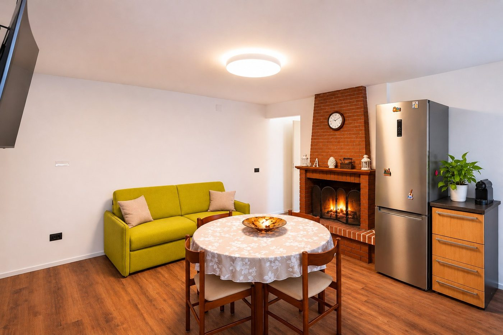

Museo Michetti (MuMi)
L’arte e la storia di Francesco Paolo Michetti nel cuore del Paese Alto.
Il mare vicino. L’Abruzzo da scoprire.
Un luogo da cui partire, in ogni stagione.
Una dimora raccolta e curata a Francavilla al Mare, tra il ritmo dell’Adriatico e la bellezza dell’entroterra abruzzese. Ambienti rinnovati e il piacere di scegliere ogni giorno un’esperienza diversa.

Una zona giorno accogliente con cucina completamente attrezzata, camera matrimoniale e bagno, pensati per vivere ogni soggiorno con la libertà e il comfort di casa propria. Dal forno alla lavastoviglie, dalla macchina del caffè alla lavasciuga, ogni dettaglio rende la permanenza più piacevole. Climatizzazione, Wi-Fi e televisori completano gli ambienti; il caminetto funzionante crea un’atmosfera speciale nei mesi più freschi, mentre la poltrona massaggiante invita a concedersi un momento di relax.
A disposizione degli ospiti c’è il salottino esterno rialzato, circondato dal verde: uno spazio tranquillo per leggere, conversare e godersi le giornate abruzzesi. Le altre aree della proprietà sono riservate e non fanno parte degli spazi liberamente accessibili.

Gli interni, la facciata e gli spazi esterni.



Le fotografie mostrano gli ambienti della dimora. La fiamma del caminetto nella fotografia è illustrativa; alcuni dettagli decorativi possono variare.
Il mare, i borghi, la natura e il fascino della Maiella. Parti da Dimora Oceano e lasciati sorprendere dall’Abruzzo, seguendo la curiosità e la voglia di esplorare. Vicino o lontano, ogni giornata può regalarti qualcosa di diverso.
L’arte e la storia di Francesco Paolo Michetti nel cuore del Paese Alto.
Dal lungomare al borgo antico: belvedere, storia e il Sentiero tra terra e mare, un percorso ad anello di circa 7,5 km.
Dimora storica legata a Francesco Paolo Michetti e ai grandi protagonisti della cultura abruzzese.
Proprietà privata: visite all’interno possibili soltanto in occasioni particolari. Per informazioni: Comune / 333 733 0828.
Le stanze dell’infanzia del poeta, tra ricordi personali, storia e letteratura.
Ingresso gratuito la prima domenica del mese nell’iniziativa Domenica al Museo.
Tradizioni, mestieri e vita quotidiana delle comunità abruzzesi, raccontati attraverso oggetti e testimonianze.
Nel verde della Villa Comunale di Chieti, custodisce il celebre Guerriero di Capestrano.
Prima domenica del mese: ingresso gratuito secondo il programma ministeriale.
Un viaggio nella storia dell’antica Teate, tra templi, reperti e le tracce dell’anfiteatro romano.
Prima domenica del mese: ingresso gratuito secondo il programma ministeriale.
Un teatro storico e una passeggiata tra piazze, palazzi e scorci della città alta.
Basilica di San Tommaso, Passeggiata Orientale, Palazzo Farnese e memoria della Battaglia di Ortona.
Una fortezza quattrocentesca affacciata a picco sull’Adriatico, tra storia e panorami della Costa dei Trabocchi.
Tra le case del borgo medievale, il castello ospita il Museo dell’Abruzzo Bizantino e Altomedievale.
Il paese alto, con i suoi scorci e belvedere, e Marina di San Vito, tra passeggiate, spiagge e tradizione marinara.
Un luogo sospeso sul mare, legato al soggiorno di D’Annunzio e Barbara Leoni. Anche senza ingresso all’eremo, il panorama merita una visita.
L’edificio è privato: la visita agli interni non è sempre possibile. Informazioni: Comune di San Vito Chietino, 0872 61911.
Una storica macchina da pesca in legno sospesa sul mare, tra i simboli più poetici della Costa dei Trabocchi.
Le visite guidate richiedono prenotazione: consulta il sito dedicato.
Su un promontorio affacciato sulla Costa dei Trabocchi, un’abbazia medievale con chiostro, cripta e un panorama indimenticabile.
Tra le colline di Manoppello, un’abbazia cistercense del XIII secolo con rosoni, sculture e architetture gotiche.
Verifica le possibilità di accesso prima della partenza.
Un paese ricco di storia e un dolce simbolo della tradizione: il bocconotto castellino, di frolla con mandorle e cioccolato.
Immersa nel verde ai piedi della Maiella, una delle più importanti testimonianze del romanico abruzzese, tra pietra chiara e antichi mosaici.
Aperture stagionali: verifica prima di partire.
Fondata nell’871, custodisce un prezioso portale bronzeo, una cripta e testimonianze di oltre mille anni di storia.
Arroccato su uno sperone di roccia, domina la valle e sembra uscito da una leggenda medievale.
Scavato nella roccia della Maiella, un piccolo eremo medievale legato a Pietro da Morrone, futuro Celestino V.
Raggiungibile soltanto a piedi: controlla le condizioni del sentiero.
Tra faggete e pareti rocciose, un complesso eremitico con chiesa, grotte e antichi ambienti monastici.
Uno spettacolare passaggio tra altissime pareti di roccia conduce ai resti dell’antico monastero.
Percorso a piedi: il Parco raccomanda calzature adatte e casco protettivo.
Un borgo alle porte dell’Abruzzo interno, tra Castello Cantelmo, vie storiche e le acque limpide della Riserva delle Sorgenti del Pescara.
Un borgo medievale nel Parco della Maiella e una valle di boschi, passerelle e paesaggi d’acqua.
Per alcuni percorsi occorre registrare l’accesso. Verifica chiusure, condizioni e regole dei sentieri.
Una fortezza spettacolare a circa 1.460 metri, sopra le montagne del Gran Sasso. Tra le sue mura e i panorami sono state girate scene di Ladyhawke e di altri film celebri. Una giornata intera che vale il viaggio.
L’ultimo tratto si percorre a piedi o con eventuali navette stagionali: verifica accessi e condizioni.
Gli anelli sono orientativi: Maps indica il percorso reale. Orari, accessi e biglietti possono variare; consulta i siti ufficiali prima di partire.
Itinerari e idee per vivere il territorio, una tappa alla volta, senza trasformare la vacanza in una corsa.
Villa Comunale e Museo di Villa Frigerj, La Civitella, Teatro Marrucino e centro storico. Una giornata tra archeologia, cultura e passeggiate.
Ortona, San Vito paese alto, Marina e Trabocco Turchino, borgo di Rocca San Giovanni e Abbazia di San Giovanni in Venere. Scegli le tappe in base al tempo.
Dal Lido Saraceni di Ortona verso San Vito Marina, Trabocco Turchino e Fossacesia, scegliendo un tratto adatto alla tua preparazione e considerando il ritorno.
Una giornata lungo la costa: Ortona, San Vito, Fossacesia e poi verso Punta Aderci. Un itinerario da percorrere senza fretta, con soste fotografiche.
Un castello, un centro storico ricco di storia e infine una specialità da assaggiare: i bocconotti di Castel Frentano.
Abbazia di San Liberatore, Eremo di Santo Spirito e dintorni di Roccamorice. Una giornata per chi ama storia e montagna; alcuni percorsi richiedono camminate.
Le Sorgenti del Pescara a Popoli Terme e il borgo di Caramanico. Per addentrarsi nella Valle dell’Orfento occorre organizzare l’accesso in base al sentiero scelto.
Hai scoperto un borgo speciale, un sentiero o un luogo che merita di essere raccontato? Le esperienze degli ospiti potranno arricchire la nostra guida e ispirare nuovi itinerari.
Lo spazio per inviare racconti e suggerimenti sarà attivato dopo la configurazione del recapito dedicato. I contributi saranno valutati prima di un’eventuale pubblicazione.
Concerti, spettacoli, mostre e appuntamenti da vivere. Torna a trovarci per scoprire nuove occasioni.
Caricamento degli appuntamenti…
Le date e la disponibilità dei biglietti sono gestite dagli organizzatori: verifica sempre prima di partire.
Non solo concerti: mostre, spettacoli, festival e appuntamenti ricorrenti come Cantine Aperte. Le date cambiano ogni anno: usa i calendari degli organizzatori per programmare la visita.
Dimora Oceano è il tuo punto di partenza per vivere la costa e l’entroterra abruzzese.
Scopri la dimoraUn territorio da scoprire anche attraverso i suoi vini. Dalle colline affacciate sull’Adriatico ai vigneti dell’entroterra, l’Abruzzo custodisce una tradizione vinicola ricca di carattere, sapori e storie da conoscere. Un’esperienza da assaporare senza fretta.
Dimora Oceano nasce con il desiderio di offrirti qualcosa in più di un semplice alloggio. Stiamo lavorando a esperienze dedicate al movimento, al benessere e al relax, da vivere su richiesta. Le attività extra saranno disponibili su prenotazione, con costi separati dal soggiorno e previa conferma.
Trabocchi, ristoranti, prodotti locali e piccoli produttori: consigli che nasceranno dalla conoscenza diretta dei luoghi.
Un giorno in riva al mare, quello dopo tra sentieri, borghi e montagne. È questa la libertà dell’Abruzzo.
Dimora Oceano. Il mare vicino, il verde intorno e la libertà di vivere l’Abruzzo con i propri tempi.
Sito informativo in anteprima. Le prenotazioni non sono ancora attive. Le esperienze extra saranno disponibili soltanto su richiesta e previa conferma, con costi separati.